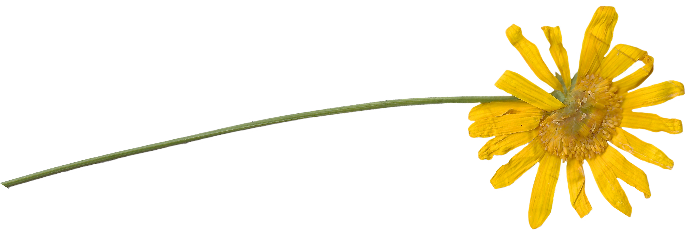

Ways to Press
PART THREE
Finally, we can use two different ways to press botanicals: the wooden press or books. Both have their advantages, and can make beautiful pressed plants.
WOODEN FLOWER PRESS:
WOODEN FLOWER PRESS:
- Cut two pieces of plywood; drill holes in each board.
- Layer the plants between two pieces of paper and wood.
- Use wingnuts and bolts to tighten everything together.
- Blotter papers will need to be changed every four days or so; press plants for 3-4 weeks.
BOOK PRESS:
- Use heavy books, like dictionary or phone books. Use a book that you don’t mind wrinkling, the moisture being absorbed has that affect.
- Layer the plants between paper.
- You may be able to press multiple flora in one book. Space the plants out, so the moisture doesn’t transfer between them.
- Weigh down book with weights, other books or even a brick.
- Change blotter papers every few days. Flora will be dry after 2-3 weeks. Remove delicate plants with tweezers.
